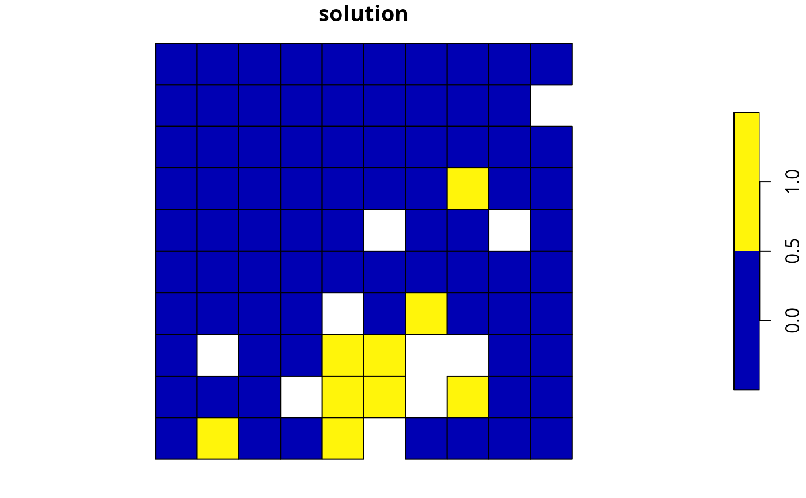

Solve a conservation planning problem().
# S4 method for OptimizationProblem,Solver solve(a, b, ...) # S4 method for ConservationProblem,missing solve(a, b, ..., run_checks = TRUE, force = FALSE)
Arguments
| a |
|
|---|---|
| b |
|
| ... | arguments passed to |
| run_checks |
|
| force |
|
Value
A numeric, matrix,
RasterLayer, Spatial,
or sf::sf() object containing the solution to the problem.
Additionally, the returned object will have the following additional
attributes: "objective" containing the solution's objective,
"runtime" denoting the number of seconds that elapsed while solving
the problem, and "status" describing the status of the solution
(e.g. "OPTIMAL" indicates that the optimal solution was found).
In most cases, the first solution (e.g. "solution_001")
will contain the best solution found by the solver (note that this
may not be an optimal solution depending on the gap used to solve
the problem and noting that the default gap is 0.1).
Details
After formulating a conservation planning problem(),
it can be solved using an exact algorithm solver (see solvers
for available solvers). If no solver has been explicitly specified,
then the best available exact algorithm solver will be used by default
(see add_default_solver(). Although these exact algorithm
solvers will often display a lot of information that isn't really that
helpful (e.g. nodes, cutting planes), they do display information
about the progress they are making on solving the problem (e.g. the
performance of the best solution found at a given point in time). If
potential issues were detected during the
presolve checks (see presolve_check())
and the problem is being forcibly solved (i.e. with force = TRUE),
then it is also worth checking for any warnings displayed by the solver
to see if these potential issues are actually causing issues
(e.g. Gurobi can display warnings that include
"Warning: Model contains large matrix coefficient range" and
"Warning: Model contains large rhs").
The object returned from this function depends on the argument to
a. If the argument to a is an
OptimizationProblem object, then the
solution is returned as a logical vector showing the status
of each planning unit in each zone. However, in most cases, the argument
to a is an ConservationProblem object, and so
the type of object returned depends on the number of solutions
generated and the type data used to represent the planning units:
numericvector containing the solution. Here,
Each element corresponds to a different planning unit. If
multiple solutions are generated, then the solution is returned as
a list of numeric vectors.
matrixcontaining numeric values for the solution.
Here, rows correspond to different planning units,
and fields (columns) correspond to different management zones. If
multiple solutions are generated, then the solution is returned as
a list of matrix objects.
Rasterobject containing the solution
in pixel values. If the argument to x contains a single
management zone, then a RasterLayer object will be returned.
Otherwise, if the argument to x contains multiple zones, then a
RasterStack object
will be returned containing a different layer for each management zone.
If multiple solutions are generated, then the solution is returned as
a list of Raster objects.
Spatial, sf::sf(), or
data.framecontaining the solution in fields (columns). Here, each row
corresponds to a different planning unit. If the argument to x
contains a single zone, the fields containing solutions are named
"solution_XXX" where "XXX" corresponds to the solution
number. If the argument to x contains multiple zones, the fields
containing solutions are named "solution_XXX_YYY" where
"XXX" corresponds to the solution and "YYY" is the name
of the management zone.
After solving problems that contain multiple zones,
it may be useful to use the category_layer() or
category_vector() function to reformat the output.
See also
Examples
# set seed for reproducibility set.seed(500) # load data data(sim_pu_raster, sim_pu_polygons, sim_pu_sf, sim_features, sim_pu_zones_stack, sim_pu_zones_sf, sim_features_zones) # build minimal conservation problem with raster data p1 <- problem(sim_pu_raster, sim_features) %>% add_min_set_objective() %>% add_relative_targets(0.1) %>% add_binary_decisions() # \dontrun{ # solve the problem s1 <- solve(p1)#> Gurobi Optimizer version 9.0.2 build v9.0.2rc0 (linux64) #> Optimize a model with 5 rows, 90 columns and 450 nonzeros #> Model fingerprint: 0x6442bf6e #> Variable types: 0 continuous, 90 integer (90 binary) #> Coefficient statistics: #> Matrix range [2e-01, 9e-01] #> Objective range [2e+02, 2e+02] #> Bounds range [1e+00, 1e+00] #> RHS range [3e+00, 8e+00] #> Found heuristic solution: objective 2337.9617505 #> Presolve time: 0.00s #> Presolved: 5 rows, 90 columns, 450 nonzeros #> Variable types: 0 continuous, 90 integer (90 binary) #> Presolved: 5 rows, 90 columns, 450 nonzeros #> #> #> Root relaxation: objective 1.931582e+03, 12 iterations, 0.00 seconds #> #> Nodes | Current Node | Objective Bounds | Work #> Expl Unexpl | Obj Depth IntInf | Incumbent BestBd Gap | It/Node Time #> #> 0 0 1931.58191 0 4 2337.96175 1931.58191 17.4% - 0s #> H 0 0 1987.3985265 1931.58191 2.81% - 0s #> #> Explored 1 nodes (12 simplex iterations) in 0.00 seconds #> Thread count was 1 (of 4 available processors) #> #> Solution count 2: 1987.4 2337.96 #> #> Optimal solution found (tolerance 1.00e-01) #> Best objective 1.987398526526e+03, best bound 1.931581908865e+03, gap 2.8085%#> class : RasterLayer #> dimensions : 10, 10, 100 (nrow, ncol, ncell) #> resolution : 0.1, 0.1 (x, y) #> extent : 0, 1, 0, 1 (xmin, xmax, ymin, ymax) #> crs : NA #> source : memory #> names : layer #> values : 0, 1 (min, max) #># print attributes describing the optimization process and the solution print(attr(s1, "objective"))#> solution_1 #> 1987.399#> solution_1 #> 0.00295186#> solution_1 #> "OPTIMAL"#> # A tibble: 5 x 3 #> feature absolute_held relative_held #> <chr> <dbl> <dbl> #> 1 layer.1 8.91 0.107 #> 2 layer.2 3.13 0.100 #> 3 layer.3 7.34 0.102 #> 4 layer.4 4.35 0.102 #> 5 layer.5 6.01 0.106# } # build minimal conservation problem with polygon (Spatial) data p2 <- problem(sim_pu_polygons, sim_features, cost_column = "cost") %>% add_min_set_objective() %>% add_relative_targets(0.1) %>% add_binary_decisions() # \dontrun{ # solve the problem s2 <- solve(p2)#> Gurobi Optimizer version 9.0.2 build v9.0.2rc0 (linux64) #> Optimize a model with 5 rows, 90 columns and 450 nonzeros #> Model fingerprint: 0xa41351c6 #> Variable types: 0 continuous, 90 integer (90 binary) #> Coefficient statistics: #> Matrix range [2e-01, 9e-01] #> Objective range [2e+02, 2e+02] #> Bounds range [1e+00, 1e+00] #> RHS range [3e+00, 7e+00] #> Found heuristic solution: objective 2145.2678910 #> Presolve time: 0.00s #> Presolved: 5 rows, 90 columns, 450 nonzeros #> Variable types: 0 continuous, 90 integer (90 binary) #> Presolved: 5 rows, 90 columns, 450 nonzeros #> #> #> Root relaxation: objective 1.732564e+03, 12 iterations, 0.00 seconds #> #> Nodes | Current Node | Objective Bounds | Work #> Expl Unexpl | Obj Depth IntInf | Incumbent BestBd Gap | It/Node Time #> #> 0 0 1732.56396 0 4 2145.26789 1732.56396 19.2% - 0s #> H 0 0 1792.5345202 1732.56396 3.35% - 0s #> #> Explored 1 nodes (12 simplex iterations) in 0.00 seconds #> Thread count was 1 (of 4 available processors) #> #> Solution count 2: 1792.53 2145.27 #> #> Optimal solution found (tolerance 1.00e-01) #> Best objective 1.792534520218e+03, best bound 1.732563961206e+03, gap 3.3456%#> cost locked_in locked_out solution_1 #> 1 215.8638 FALSE FALSE 0 #> 2 212.7823 FALSE FALSE 0 #> 3 207.4962 FALSE FALSE 0 #> 4 208.9322 FALSE TRUE 0 #> 5 214.0419 FALSE FALSE 0 #> 6 213.7636 FALSE FALSE 0# calculate feature representation in the solution r2 <- feature_representation(p2, s2[, "solution_1"]) print(r2)#> # A tibble: 5 x 3 #> feature absolute_held relative_held #> <chr> <dbl> <dbl> #> 1 layer.1 8.05 0.108 #> 2 layer.2 2.83 0.101 #> 3 layer.3 6.65 0.103 #> 4 layer.4 3.87 0.101 #> 5 layer.5 5.41 0.107# plot solution spplot(s2, zcol = "solution_1", main = "solution", axes = FALSE, box = FALSE)# } # build minimal conservation problem with polygon (sf) data p3 <- problem(sim_pu_sf, sim_features, cost_column = "cost") %>% add_min_set_objective() %>% add_relative_targets(0.1) %>% add_binary_decisions() # \dontrun{ # solve the problem s3 <- solve(p3)#> Gurobi Optimizer version 9.0.2 build v9.0.2rc0 (linux64) #> Optimize a model with 5 rows, 90 columns and 450 nonzeros #> Model fingerprint: 0xa41351c6 #> Variable types: 0 continuous, 90 integer (90 binary) #> Coefficient statistics: #> Matrix range [2e-01, 9e-01] #> Objective range [2e+02, 2e+02] #> Bounds range [1e+00, 1e+00] #> RHS range [3e+00, 7e+00] #> Found heuristic solution: objective 2145.2678910 #> Presolve time: 0.00s #> Presolved: 5 rows, 90 columns, 450 nonzeros #> Variable types: 0 continuous, 90 integer (90 binary) #> Presolved: 5 rows, 90 columns, 450 nonzeros #> #> #> Root relaxation: objective 1.732564e+03, 12 iterations, 0.00 seconds #> #> Nodes | Current Node | Objective Bounds | Work #> Expl Unexpl | Obj Depth IntInf | Incumbent BestBd Gap | It/Node Time #> #> 0 0 1732.56396 0 4 2145.26789 1732.56396 19.2% - 0s #> H 0 0 1792.5345202 1732.56396 3.35% - 0s #> #> Explored 1 nodes (12 simplex iterations) in 0.00 seconds #> Thread count was 1 (of 4 available processors) #> #> Solution count 2: 1792.53 2145.27 #> #> Optimal solution found (tolerance 1.00e-01) #> Best objective 1.792534520218e+03, best bound 1.732563961206e+03, gap 3.3456%#> Simple feature collection with 6 features and 4 fields #> geometry type: POLYGON #> dimension: XY #> bbox: xmin: 0 ymin: 0.9 xmax: 0.6 ymax: 1 #> CRS: NA #> cost locked_in locked_out solution_1 geometry #> 1 215.8638 FALSE FALSE 0 POLYGON ((0 1, 0.1 1, 0.1 0... #> 2 212.7823 FALSE FALSE 0 POLYGON ((0.1 1, 0.2 1, 0.2... #> 3 207.4962 FALSE FALSE 0 POLYGON ((0.2 1, 0.3 1, 0.3... #> 4 208.9322 FALSE TRUE 0 POLYGON ((0.3 1, 0.4 1, 0.4... #> 5 214.0419 FALSE FALSE 0 POLYGON ((0.4 1, 0.5 1, 0.5... #> 6 213.7636 FALSE FALSE 0 POLYGON ((0.5 1, 0.6 1, 0.6...# calculate feature representation in the solution r3 <- feature_representation(p3, s3[, "solution_1"]) print(r3)#> # A tibble: 5 x 3 #> feature absolute_held relative_held #> <chr> <dbl> <dbl> #> 1 layer.1 8.05 0.108 #> 2 layer.2 2.83 0.101 #> 3 layer.3 6.65 0.103 #> 4 layer.4 3.87 0.101 #> 5 layer.5 5.41 0.107# } # build multi-zone conservation problem with raster data p4 <- problem(sim_pu_zones_stack, sim_features_zones) %>% add_min_set_objective() %>% add_relative_targets(matrix(runif(15, 0.1, 0.2), nrow = 5, ncol = 3)) %>% add_binary_decisions() # \dontrun{ # solve the problem s4 <- solve(p4)#> Gurobi Optimizer version 9.0.2 build v9.0.2rc0 (linux64) #> Optimize a model with 105 rows, 270 columns and 1620 nonzeros #> Model fingerprint: 0xa478f36b #> Variable types: 0 continuous, 270 integer (270 binary) #> Coefficient statistics: #> Matrix range [2e-01, 1e+00] #> Objective range [2e+02, 2e+02] #> Bounds range [1e+00, 1e+00] #> RHS range [1e+00, 2e+01] #> Found heuristic solution: objective 12614.662551 #> Presolve removed 3 rows and 0 columns #> Presolve time: 0.01s #> Presolved: 102 rows, 270 columns, 1350 nonzeros #> Variable types: 0 continuous, 270 integer (270 binary) #> Presolved: 102 rows, 270 columns, 1350 nonzeros #> #> #> Root relaxation: objective 1.096484e+04, 94 iterations, 0.00 seconds #> #> Nodes | Current Node | Objective Bounds | Work #> Expl Unexpl | Obj Depth IntInf | Incumbent BestBd Gap | It/Node Time #> #> 0 0 10964.8406 0 14 12614.6626 10964.8406 13.1% - 0s #> H 0 0 11209.793128 10964.8406 2.19% - 0s #> #> Explored 1 nodes (94 simplex iterations) in 0.01 seconds #> Thread count was 1 (of 4 available processors) #> #> Solution count 2: 11209.8 12614.7 #> #> Optimal solution found (tolerance 1.00e-01) #> Best objective 1.120979312806e+04, best bound 1.096484061295e+04, gap 2.1852%#> class : RasterStack #> dimensions : 10, 10, 100, 3 (nrow, ncol, ncell, nlayers) #> resolution : 0.1, 0.1 (x, y) #> extent : 0, 1, 0, 1 (xmin, xmax, ymin, ymax) #> crs : NA #> names : layer.1.1, layer.1.2, layer.1.3 #> min values : 0, 0, 0 #> max values : 1, 1, 1 #>#> # A tibble: 15 x 4 #> feature zone absolute_held relative_held #> <chr> <chr> <dbl> <dbl> #> 1 feature_1 zone_1 16.3 0.195 #> 2 feature_2 zone_1 5.40 0.173 #> 3 feature_3 zone_1 14.2 0.198 #> 4 feature_4 zone_1 6.55 0.154 #> 5 feature_5 zone_1 10.7 0.189 #> 6 feature_1 zone_2 15.5 0.186 #> 7 feature_2 zone_2 6.14 0.197 #> 8 feature_3 zone_2 14.6 0.203 #> 9 feature_4 zone_2 7.83 0.184 #> 10 feature_5 zone_2 9.90 0.175 #> 11 feature_1 zone_3 14.4 0.173 #> 12 feature_2 zone_3 5.96 0.191 #> 13 feature_3 zone_3 12.7 0.177 #> 14 feature_4 zone_3 7.68 0.180 #> 15 feature_5 zone_3 9.83 0.173# } # build multi-zone conservation problem with polygon (sf) data p5 <- problem(sim_pu_zones_sf, sim_features_zones, cost_column = c("cost_1", "cost_2", "cost_3")) %>% add_min_set_objective() %>% add_relative_targets(matrix(runif(15, 0.1, 0.2), nrow = 5, ncol = 3)) %>% add_binary_decisions() # \dontrun{ # solve the problem s5 <- solve(p5)#> Gurobi Optimizer version 9.0.2 build v9.0.2rc0 (linux64) #> Optimize a model with 105 rows, 270 columns and 1620 nonzeros #> Model fingerprint: 0x00214866 #> Variable types: 0 continuous, 270 integer (270 binary) #> Coefficient statistics: #> Matrix range [2e-01, 1e+00] #> Objective range [2e+02, 2e+02] #> Bounds range [1e+00, 1e+00] #> RHS range [1e+00, 1e+01] #> Found heuristic solution: objective 10229.621561 #> Presolve removed 6 rows and 0 columns #> Presolve time: 0.00s #> Presolved: 99 rows, 270 columns, 1080 nonzeros #> Variable types: 0 continuous, 270 integer (270 binary) #> Presolved: 99 rows, 270 columns, 1080 nonzeros #> #> #> Root relaxation: objective 8.838392e+03, 43 iterations, 0.00 seconds #> #> Nodes | Current Node | Objective Bounds | Work #> Expl Unexpl | Obj Depth IntInf | Incumbent BestBd Gap | It/Node Time #> #> 0 0 8838.39193 0 8 10229.6216 8838.39193 13.6% - 0s #> H 0 0 9015.0191263 8838.39193 1.96% - 0s #> #> Explored 1 nodes (43 simplex iterations) in 0.01 seconds #> Thread count was 1 (of 4 available processors) #> #> Solution count 2: 9015.02 10229.6 #> #> Optimal solution found (tolerance 1.00e-01) #> Best objective 9.015019126339e+03, best bound 8.838391930390e+03, gap 1.9593%#> Simple feature collection with 6 features and 9 fields #> geometry type: POLYGON #> dimension: XY #> bbox: xmin: 0 ymin: 0.9 xmax: 0.6 ymax: 1 #> CRS: NA #> cost_1 cost_2 cost_3 locked_1 locked_2 locked_3 solution_1_zone_1 #> 1 215.8638 183.3344 205.4113 FALSE FALSE FALSE 0 #> 2 212.7823 189.4978 209.6404 FALSE FALSE FALSE 0 #> 3 207.4962 193.6007 215.4212 TRUE FALSE FALSE 0 #> 4 208.9322 197.5897 218.5241 FALSE FALSE FALSE 0 #> 5 214.0419 199.8033 220.7100 FALSE FALSE FALSE 0 #> 6 213.7636 203.1867 224.6809 FALSE FALSE FALSE 0 #> solution_1_zone_2 solution_1_zone_3 geometry #> 1 0 0 POLYGON ((0 1, 0.1 1, 0.1 0... #> 2 1 0 POLYGON ((0.1 1, 0.2 1, 0.2... #> 3 1 0 POLYGON ((0.2 1, 0.3 1, 0.3... #> 4 1 0 POLYGON ((0.3 1, 0.4 1, 0.4... #> 5 1 0 POLYGON ((0.4 1, 0.5 1, 0.5... #> 6 1 0 POLYGON ((0.5 1, 0.6 1, 0.6...# calculate feature representation in the solution r5 <- feature_representation(p5, s5[, c("solution_1_zone_1", "solution_1_zone_2", "solution_1_zone_3")]) print(r5)#> # A tibble: 15 x 4 #> feature zone absolute_held relative_held #> <chr> <chr> <dbl> <dbl> #> 1 feature_1 zone_1 12.4 0.166 #> 2 feature_2 zone_1 4.35 0.155 #> 3 feature_3 zone_1 10.5 0.162 #> 4 feature_4 zone_1 6.13 0.161 #> 5 feature_5 zone_1 8.32 0.163 #> 6 feature_1 zone_2 10.2 0.136 #> 7 feature_2 zone_2 5.07 0.181 #> 8 feature_3 zone_2 9.83 0.151 #> 9 feature_4 zone_2 6.33 0.167 #> 10 feature_5 zone_2 6.79 0.133 #> 11 feature_1 zone_3 14.0 0.187 #> 12 feature_2 zone_3 4.76 0.170 #> 13 feature_3 zone_3 12.6 0.193 #> 14 feature_4 zone_3 5.96 0.157 #> 15 feature_5 zone_3 9.23 0.180# create new column representing the zone id that each planning unit # was allocated to in the solution s5$solution <- category_vector(s5[, c("solution_1_zone_1", "solution_1_zone_2", "solution_1_zone_3")]) s5$solution <- factor(s5$solution) # plot solution plot(s5[, "solution"])# }